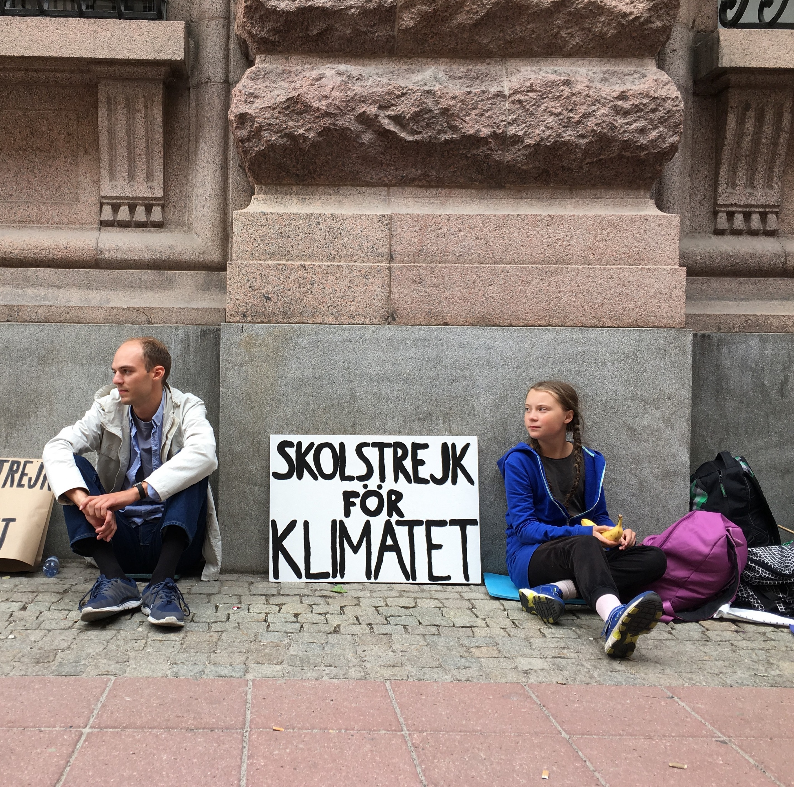
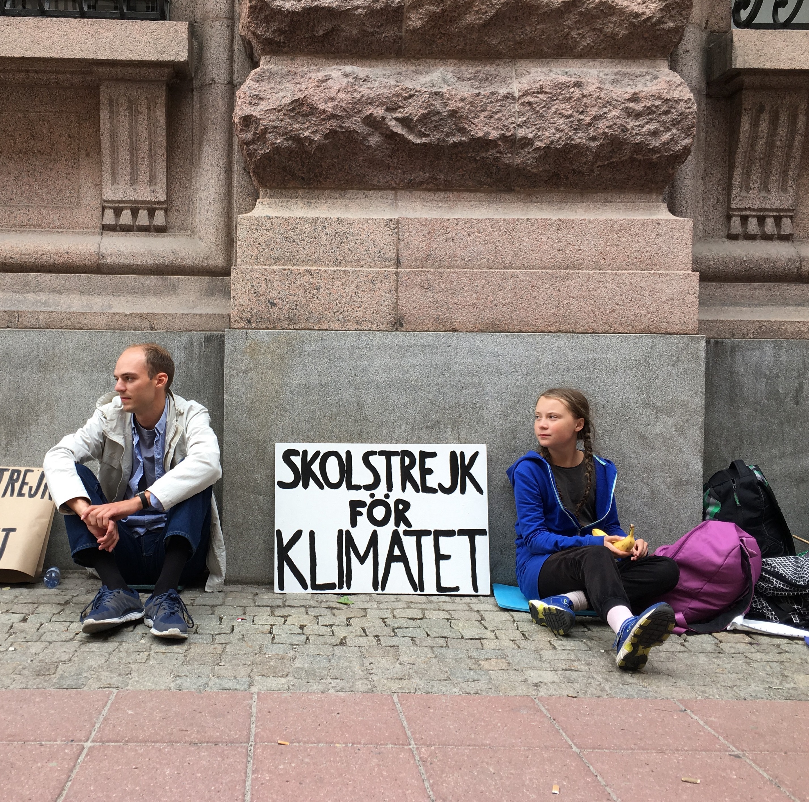

| Category\Generation |
Web 1.0 |
Web 2.0 |
Web 3.0 |
| Search engines |
Search engines retrieve macro contents. Search is very fast but the results are often inaccurate or includes to many results to process |
Search engines retrieve tags with micro contents. The process is not automatic and it covers negligible percents of the WWW. It tags every-thing: links, events, news, pictures and so on. Google Base retrieves micro content texts. |
Search engines will hopefully retrieve micro content texts which were tagged by automatic process. This implies translating billions of Web 1.0 macro content into micro contents. The result could be more precise search because tagging can solve part of the ambiguity that homonyms and synonyms introduce into the search process. |
| Communication method |
One way publishing of content without interaction between publishers and readers. Static content. |
Two way communication through social networking, blogs, wikis, tagging, video and user generated content. |
The web will be more interactive with users, leading to a kind of AI. |
Content and consumers |
Companies publishes content people consume |
People publish content that other people can consume. Moreover, companies build platforms that let people publish content for other people. |
People build applications that people can interact with. Moreover, companies build platforms that let people publish services by leveraging the associations between people or special content. |
In order to find information about side effects of drugs, we will need the specific addresses of the websites.
The search is fast but the results can be inaccurate because the search engine retrieves macro contents only.
In order to find information about side effects of drugs, we will need to write the search word (for exmaple: side effects, drugs) in a query and we won't need to know the specific address.
The search engines will hopefully retrieve micro content texts, which will be tagged during an automatic process.
The search in this web generation is based on semantics and other advanced methods and it can make the results more precise.
The tagging can solve part of the ambiguity that homonyms and synonyms introduce into the process of search.
 
